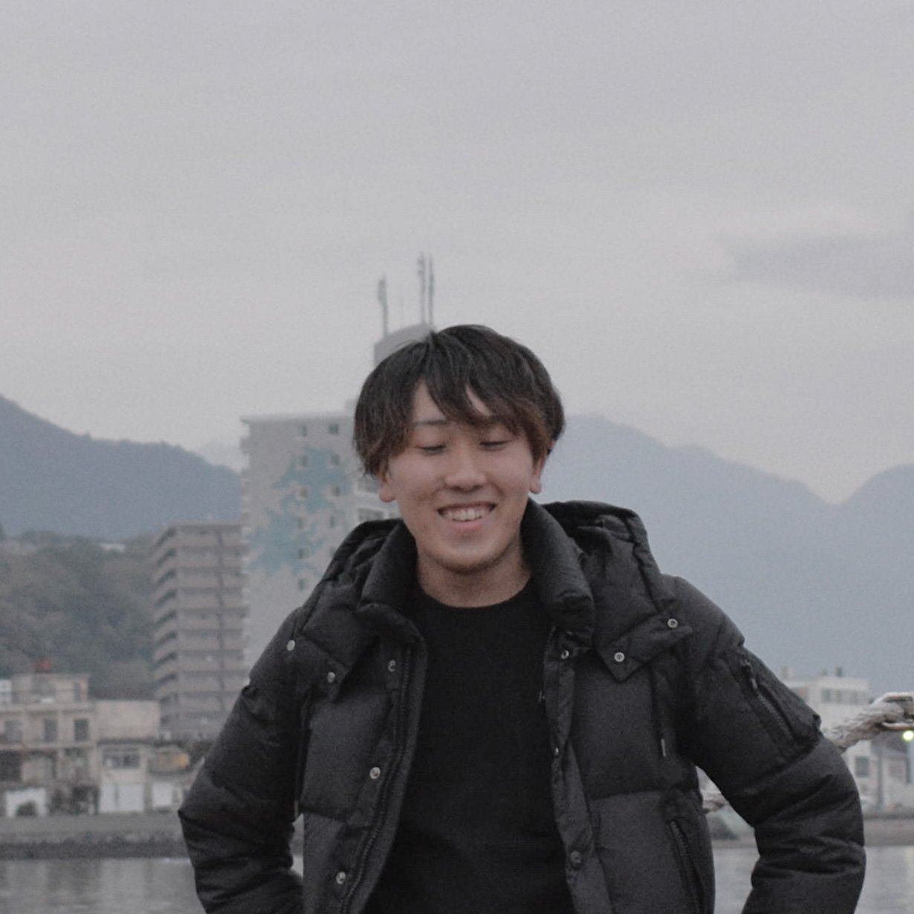

About me.
わたしについて
- 大分県でweb・デザインを学んでいます。
- 2015年3月に福岡県の専門学校へ進学。
- 2020年3月に地元の大分県へ移住。
- 2020年11月より製造関係の会社へ入社する。
- 2021年9月より友人とデザイン・コーディング学習を始める。
- 2022年11月に会社を退職し、現在転職活動中。

| 代表 : | 小野 和也 (KAZUYA ONO) |
|---|---|
| 名称 : | Kurosukenomori (くろすけの森) |
| 所在地 : | 大分県 |
| 事業内容 : | web制作におけるデザイン、HTML・CSS(SCSS)コーディング、スマートフォンサイト、Javascriptを使用したUIデザイン、CMS等 |